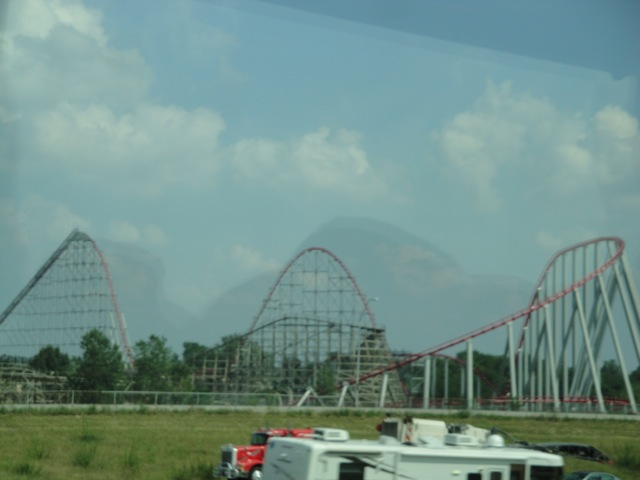
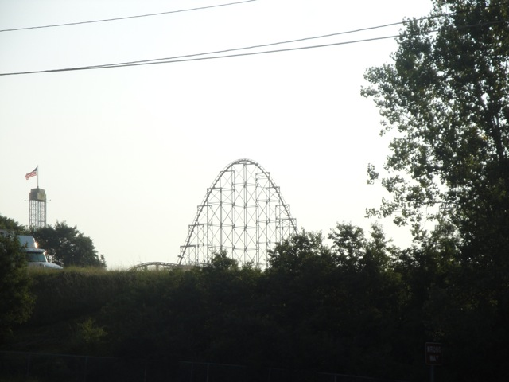
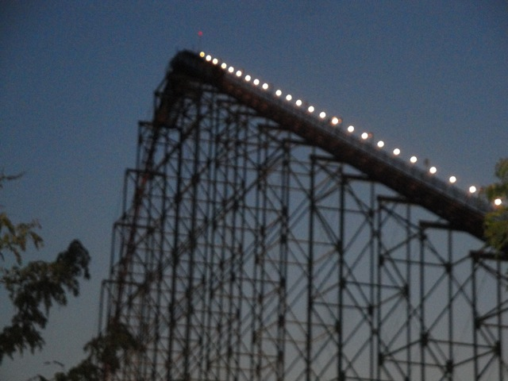
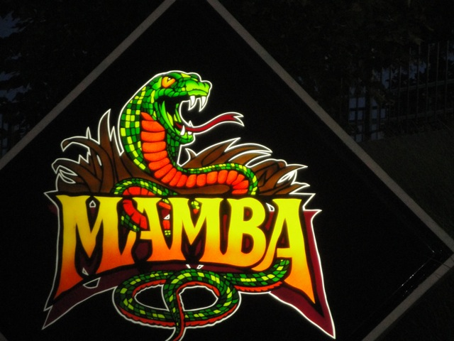

| |
Mamba Review

Today at Incrediblecoasters, we're going to be reviewing Mamba at Worlds of Fun. After getting in the cars and pulling down the lap bar, you go out of the station. You roll around a brief turn and head up the lifthill. About a minute later, we're still climbing the lifthill. Not much is going on. Just climbing this lifthill. To your right, you get a pretty good view of Worlds of Fun and Timber Wolf in particular. To your left however, not much of a view. However, that really doesn't matter, as by this point, we've finally reached the top of the lifthill. At this point, everything at Worlds of Fun looks really tiny as you dominate above everything else, just wanting to drop already. We fall down the first drop. While it's not an amazing first drop or anything, we do gain quite a lot of speed, so it at least does its job. We then fly up the second hill. While not as big as the first drop, this hill is still bigger than most coasters 1st drop. While it's not an amazing hill or anything, it does have a little bit of floater air to it, so that makes it fun. We then rise up another big hill. But instead of just dropping back down, we go through a little bit of straight track, before we just turn down to the ground. We reach the grass at high speeds, but continue to just turn. We're turning on an open feild, but as we keep turning, we notice the Mamba supports are right above us, and they're getting lower and lower and lower. It actually gets to a point where it looks like it will literally cut your head off however, we escape as we turn away from one of the best headchopper moments on a coaster ever. We eventually stop turning as we come across some straight track that we just shred through before turning left and heading up another hill. Good news. This hill has some pretty good floater air. YAY!!!!!!!!! =) The bad news however is that this is the mid course brakes and now our sense of speed is permanently lost. LAME!!!!!!! =( We then drop off the mid course brakes, though we're not going too fast now. We then rise up into a bunny hop. It's not a fantastic ejector air bunny hop, but it does provide us with some mild floater air. So it's still fun. After that, it's a pretty typical and predictable ending. Bunny hop. Mild Floater Air. Whee! I guess. Bunny Hop. Mild Floater Air. Whee I guess. Bunny Hop. Mild Floater Air. Another little bump up to give another pop of floater air. Whee I guess. Turn. Some mild laterals. Brake run. Yeah. That's pretty much Mamba. While it's far from a bad ride, it's just nothing special. Nothing more than your typical Morgan Hyper. It's fun and all. I do enjoy the speed and the mild floater air moments. But it's really no different from its sister rides, Steel Force and Wild Thing. And none of them stand out in the world of hyper coasters. However, it is a fun ride. I'd definetly give it a ride when at Worlds of Fun.
7/10
Location: Worlds of Fun
Opened: 1998
Built by: Morgan
Last Ridden: August 6, 2010
Mamba Photos



|